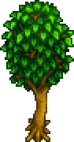
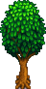
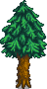
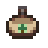
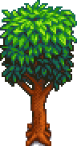
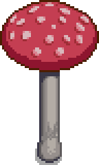
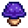
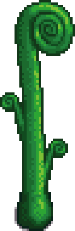
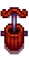

Torneirinha em
qual árvore?
o que cada árvore dá · dias · preço
salva
esse guia
esse guia

Ácer
Xarope de ácer
9 dias200g

Carvalho
Resina de carvalho
7 dias150g

Pinheiro

Alcatrão de pinho5 dias100g

Mogno
Seiva ×5 a 10
1 dia2g

Cogumelo

Cogumelos (até o roxo)varia≤ 250g

Chuva Verde
2 dias90g
Mística
7 dias1.000g
Torneirinha
Coleta nível 4
40 Madeira + 2 Barra de Cobre

Pesada: 2× mais rápida
@segredosdovalleyinverno: cogumelo e samambaia param · wiki